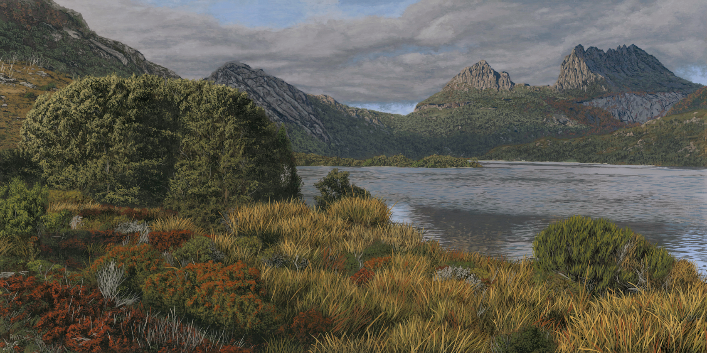
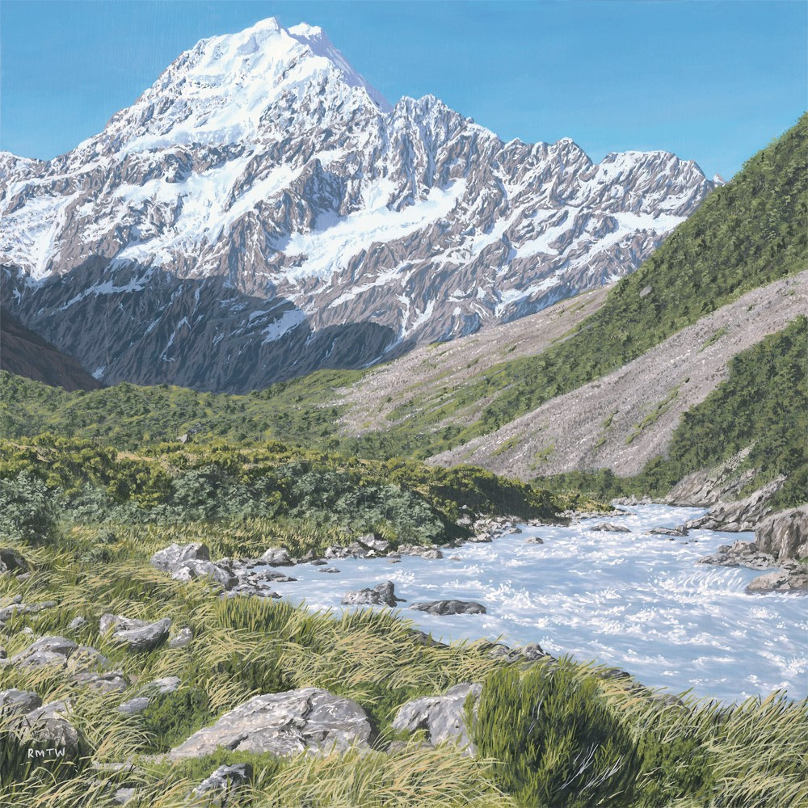
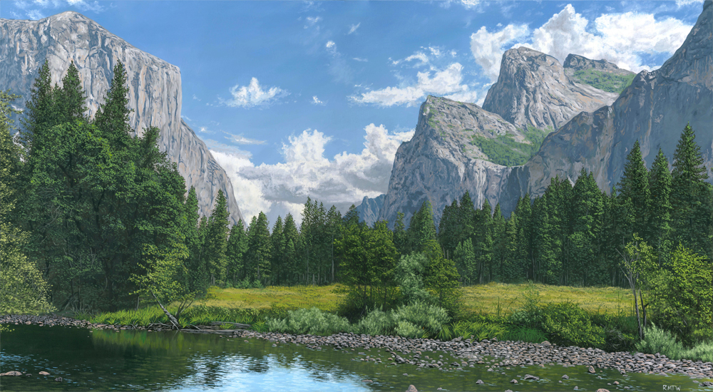
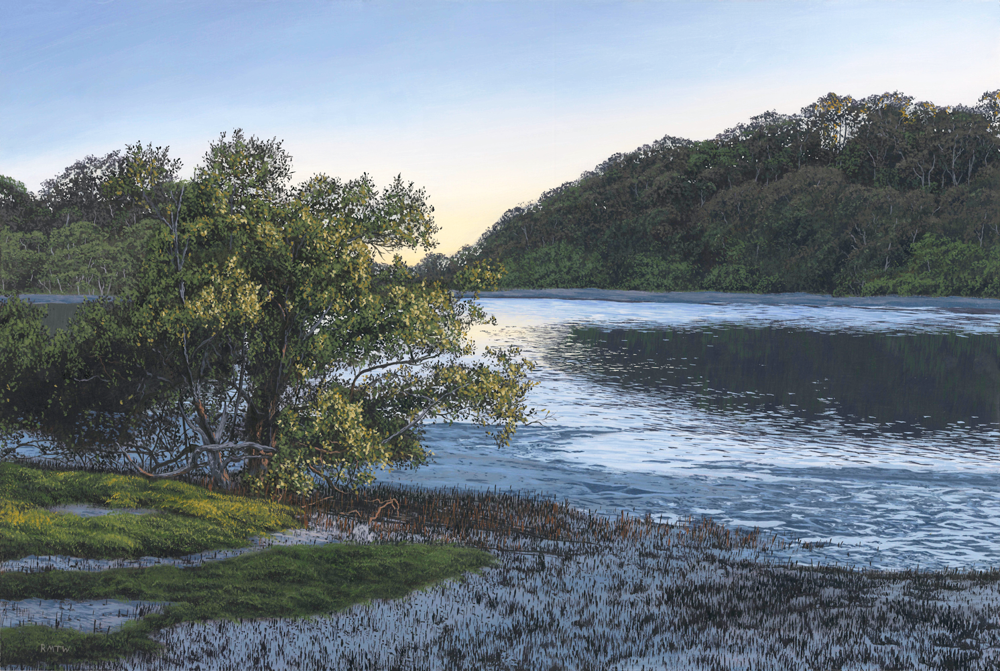
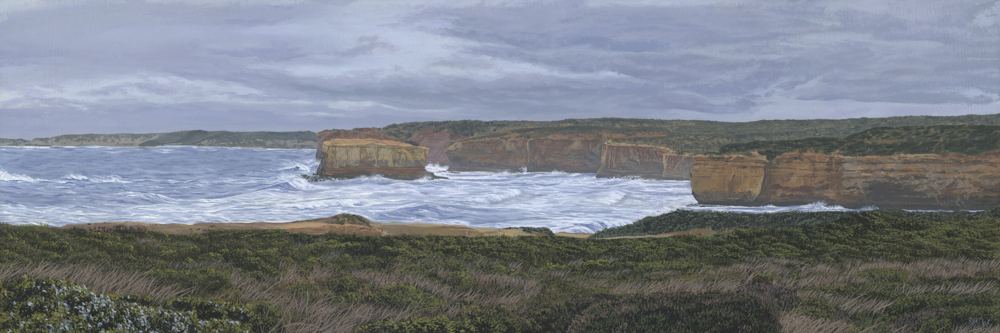

My time as a professional landscape artist
I've been very lucky to have success as a traditional artist. Take a look at some of my favourite paintings!
For some time after high school I started painting to fill in the time and develop a new skill. After enough practice, I started getting reasonably good at it and eventually I decided to take a couple of years off during my undergraduate degrees in order to focus on landscape painting full time. You can take a look at my work here. I originally learnt from the free Bob Ross The Joy of Painting videos on YouTube and built my style from there. Each photorealistic painting is a very long process (usually taking anywhere from 40-80 hours per small painting!) and it was great to get into the zone.
{kind=link}
Painting #71 — 30x60cm Oil on Wooden Panel — Cradle Mountain, Tasmania, Aus
This was taken on my first trip to Tasmania in May of 2017. Cradle Mountain National Park will forever be one of my happy places on Earth, and I've visited it twice since then. Truly it is one of the most beautiful places I've ever seen and everyone should visit at some point in their life.
{kind=link}
Painting #67 — 30x30cm Oil on Wooden Panel — Hooker Valley, New Zealand
Regrettably, the reference for this painting was not photographed by me and I have not yet been to New Zealand although the South Island is the place I most want to visit. I won an 'Emerging Artist Award' at the d'Arcy Doyle Art Awards for this painting, with a monetary prize.
{kind=link}
Painting #76 - 45x45cm Oil on Wooden Panel — Robina, Queensland, Aus
I've spent several years living on the Gold Coast — while the GC Hinterland is beautiful and well worthy of painting, the suburbs of the city is maybe not so. Despite this, I managed to find a pocket of beauty well within a commercial centre of the city in the suburb of Robina. This reference was taken about a 10 minute walk from where I was living at the time.
{kind=link}
Painting #64 - 30x60cm Oil on Wooden Panel — Yosemite Valley, California, USA
For a long while this was my favourite painting of mine. I'd day dreamed for a long time about just sitting on the side of this creek.
{kind=link}
Painting #74 - 30x45cm Oil on Wooden Panel — Currumbin Creek, Queensland, Aus
Currumbin Creek is one of my happy places on the Gold Coast. I was very fortunate to go to school right next to it, so I would walk up and down this creek every day for years. Walking along the adjacent board walk as the sun rises is one of life's great pleasures. I would kayak along it in the summer, and it was always exciting to see hundreds of jellyfish in the creek within arms reach.
{kind=link}
Painting #70 - 20x60cm Oil on Wooden Panel — Great Ocean Road, Victoria, Aus
Another one from my trip with my sister in 2018. I was listening to a dangerous amount of Tusk while painting this one too. I think 'Storms' pairs well with this painting.
{kind=link}
{kind=link}
{kind=link}
{kind=link}
{kind=link}